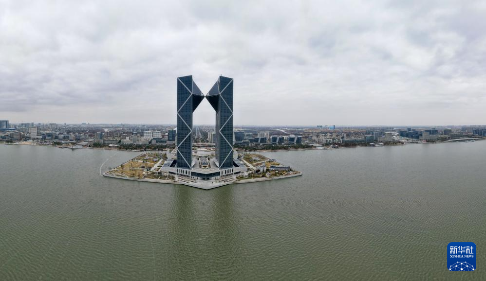
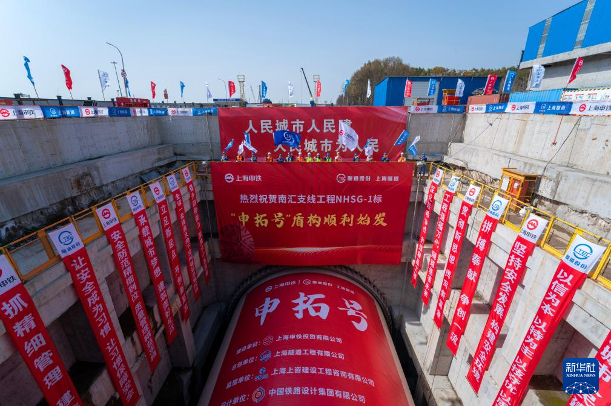
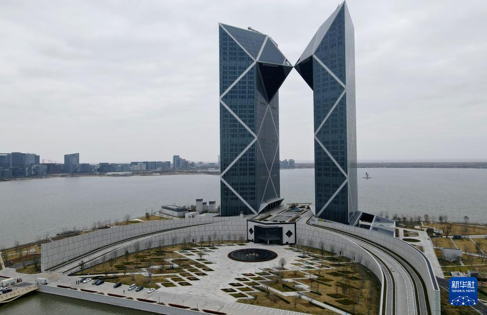

2026年1月29日，滴水湖畔的临港西岛中银金融中心双子塔（无人机全景照片）。
新华社记者 方喆 摄
今年国庆，南汇支线完成了第一次热滑。8月的发布会上，官方给了明确时间。临港人念叨了好几年的这条线，现在走到哪一步了。
临港人等这条线，等得快五年了。
先说结论：不是“快了”，是有日子了。
2026年8月21日，上海市政府新闻发布会上，临港新片区管委会负责人给了一句话——
“明年7月份市域线南汇支线将建成通车，届时临港到浦东机场、上海东站以及中心城区会越来越便捷。”
“明年7月”，就是2027年7月。
2022年初 南汇支线开工
2025年11月 主线段结构贯通
2026年8月15日 全线结构贯通
2026年10月 完成首次热滑试验
2027年7月 建成通车（官方发布会口径）
快五年，从一根桩，到一条线。
01
一条线，把“末梢”往前挪
同一场发布会上，还有一句更实在的话。
“临港从区位上看现在是交通末梢。”
说这话的人没绕弯子。住在滴水湖的人都懂：进城靠16号线，去浦东机场没有轨道直达，开车走S2，时间全看路上堵不堵。
南汇支线，就是来补这块短板的。
全线34.86公里，6座车站。主线27.88公里，从浦东3号航站楼站引出，经鹏翔路、滨海森林公园、星海湾路，到滴水湖北站。东支线6.98公里，从上海东站接进鹏翔路。
最高时速160公里。官方的时空目标写得很明确：临港主要节点15分钟到浦东枢纽，60分钟到虹桥枢纽。
34.86公里 全长 6座 车站 160公里 最高时速
滴水湖北站值得单独说一句。它是地下站，装修方案里，顶板开了四处钢结构天窗，取了个名字，叫“临港晨露”。
以后从湖边走进站厅，抬头能看见天光。这个设计，比很多口号都更像临港。
02
今年这一步，走得很关键
8月15日，最后一榀箱梁落位。南汇支线的主线和支线，全线结构贯通。
国庆假期，第一次热滑试验完成。这件事，比它听起来重要得多。

2025年3月25日，南汇支线“申拓号”盾构机始发仪式现场。
新华社发
热滑是什么？说白了，是给整条线做一次“通电体检”。
检测车以60公里时速跑，看弓网接不接得住、轨道平不平、信号稳不稳。弓力、导高、拉出值、硬点、拉弧，一项一项测。
上海市交通委员会的通报写得很清楚：这标志着线路由建设阶段，转入联调联试、试运行准备阶段。
后面的顺序是：联调联试、空载试运行、初期运营。
所以别急着等“首班车”。具体开通日期、票价、首末班时间，目前都还没公布。
但可以确定的是，这条线已经不在图纸上了。
03
通车以后，临港人的日子
最直接的一笔账，是机场。
从滴水湖北站上车，星海湾路、滨海森林公园、鹏翔路，第四站就是浦东3号航站楼。在T3接上机场联络线，往西就是虹桥。
东支线那头连着上海东站。东方枢纽，也不再是地图上别人的事。
第二笔账，是通勤。
16号线也在动。官方说法是提升运能，争取非高峰时段再增开直达车，加密大站车班次。S2沪芦高速的拓宽改造，同样在推进。
第三笔账，是日常。
滴水湖青创湾要贯通10公里滨河慢行系统，官方给的说法，是打造临港“最美骑行道”。核心区公交站点500米覆盖率，目标是100%。
一条线改变不了所有事。站点到家那最后一公里，公交接不接得上，才是每天的真实体感。
但方向是对的。临港终于开始从“交通末梢”，往“枢纽”那头挪了。
对天天往返的人来说，省下的不只是几十分钟。是每天出门前，少算一次时间。

滴水湖西岛，双子塔立在湖面上。
新华社记者 方喆 摄
明年夏天，第一班车会从滴水湖北站的地下开出。
它会穿过临港的工地、河道和新栽的行道树，一路开进浦东机场。
到那时，滴水湖到机场，就不再是一个要提前两小时出门的问题了。
你最想坐这条线去哪儿？
是赶一趟早班机，是去虹桥接人，还是单纯想看看，从滴水湖边上钻到地下是什么感觉。
评论区聊聊。
资料来源：上海市交通委员会、上海市政府新闻发布会（2026年8月21日）、上海市规划和自然资源局。
文中通车时间为官方发布会口径，具体开通安排以运营单位公告为准。